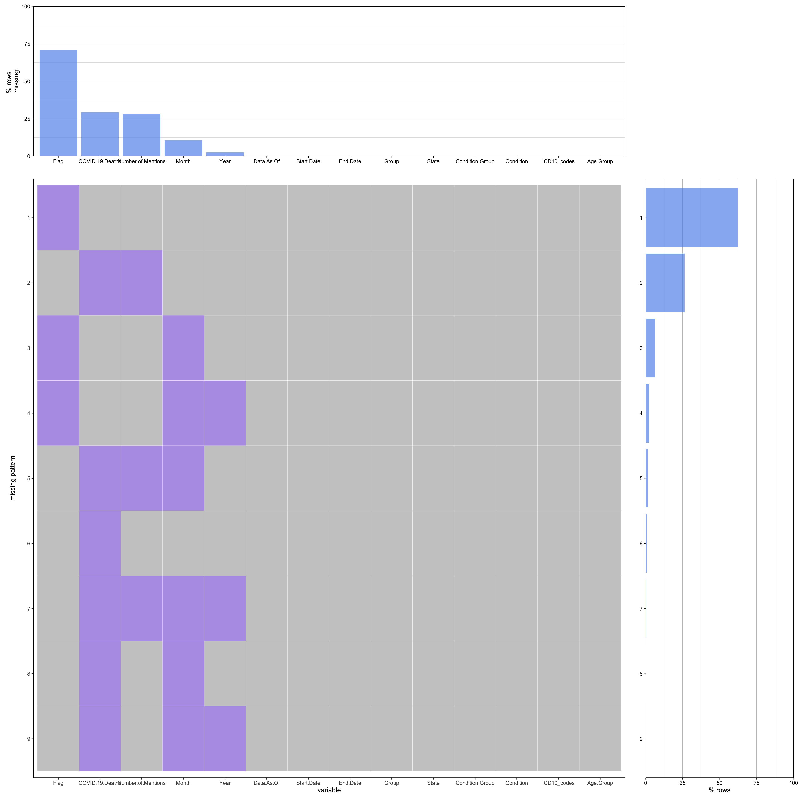
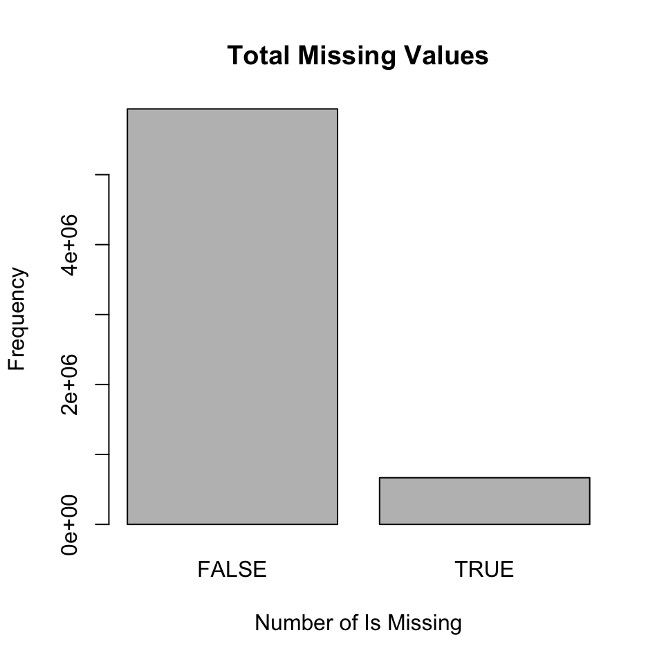

Chapter 3 Data
3.1 Sources
3.1.1 Describe the data cources
Since our research orientation is Covid-19 health related analysis in the United States, the first data source we consider is the data set from the CDC. We decided to use the Conditions Contributing to COVID-19 Deaths, by State and Age, Provisional 2020-2022 data set from CDC because the data set contains interesting information to analyze, such as date, age group, condition and death which could potentially answer the questions we come up with about our research topic. Moreover, the information of the data set is fresh and up to date, last updated on 10/26/2022 and updates weekly.
The data set was collected based on a current flow of mortality data in the National Vital Statistics System. This data include deaths occurring within the 50 states and the District of Columbia which have been received and coded as of the date specified. Since it takes several weeks for death records to be submitted to National Center for Health Statistics (NCHS), processed, coded, and tabulated, we should notice that the data may be incomplete, especially for the more recent time periods.
Except from this data set, there are other similar COVID-19 death data from some local and state health departments. The reason why we choose this one is its comprehensiveness. Compared with other data sets, not only does this one include laboratory confirmed COVID-19 deaths, it also includes clinically confirmed COVID-19 deaths.
3.1.2 Basic information about the data
Number of records: 471961 rows, 14 columns
Type of variables:
1) “Date As Of”: date. This is the date of analysis.
2) “Start Date”: date. This is the first week-ending date of data period.
3) “End Date”: date. This is the last week-ending date of data period.
4) “Group”: chr. This is time-period indicator for record: by Month, by Year, Total.
5) “Year”: num. This is the year in which death occurred.
6) “Month”: num. This is the month in which death occurred.
7) “State”: chr. This is the jurisdiction of occurrence.
8) “Condition Group”: chr. This is the medical condition group.
9) “Condition”: chr. This is condition contributing to deaths involving COVID-19.
10) “ICD10_codes”: chr. This is the ICD-10 code for condition.
11) “Age Group”: chr.
12) “COVID-19 Deaths”: num.
13) “Number of Mentions”: num.
14) “Flag”: chr. Counts less than 10 suppressed.
3.2 Cleaning / transformation
Our data does not require any cleaning since it is already in a tidy form. It needs transformations for each of the graph made and the data frames for each graph are shown below.
3.2.1 Graph 1
3.2.1.1 2020-2022
## region long lat group order subregion COVID.19.Deaths
## 1 alabama -87.46201 30.38968 1 1 <NA> 138716
## 2 alabama -87.48493 30.37249 1 2 <NA> 138716
## 3 alabama -87.52503 30.37249 1 3 <NA> 138716
## 4 alabama -87.53076 30.33239 1 4 <NA> 138716
## 5 alabama -87.57087 30.32665 1 5 <NA> 138716
## 6 alabama -87.58806 30.32665 1 6 <NA> 1387163.2.1.2 2020
## region long lat group order subregion COVID.19.Deaths
## 1 alabama -87.46201 30.38968 1 1 <NA> 44462
## 2 alabama -87.48493 30.37249 1 2 <NA> 44462
## 3 alabama -87.52503 30.37249 1 3 <NA> 44462
## 4 alabama -87.53076 30.33239 1 4 <NA> 44462
## 5 alabama -87.57087 30.32665 1 5 <NA> 44462
## 6 alabama -87.58806 30.32665 1 6 <NA> 444623.2.1.3 2021
## region long lat group order subregion COVID.19.Deaths
## 1 alabama -87.46201 30.38968 1 1 <NA> 66003
## 2 alabama -87.48493 30.37249 1 2 <NA> 66003
## 3 alabama -87.52503 30.37249 1 3 <NA> 66003
## 4 alabama -87.53076 30.33239 1 4 <NA> 66003
## 5 alabama -87.57087 30.32665 1 5 <NA> 66003
## 6 alabama -87.58806 30.32665 1 6 <NA> 660033.2.1.4 2022
## region long lat group order subregion COVID.19.Deaths
## 1 alabama -87.46201 30.38968 1 1 <NA> 27882
## 2 alabama -87.48493 30.37249 1 2 <NA> 27882
## 3 alabama -87.52503 30.37249 1 3 <NA> 27882
## 4 alabama -87.53076 30.33239 1 4 <NA> 27882
## 5 alabama -87.57087 30.32665 1 5 <NA> 27882
## 6 alabama -87.58806 30.32665 1 6 <NA> 278823.2.2 Graph 2
3.2.2.2 2020
## # A tibble: 6 × 5
## # Groups: State [6]
## Year State `Condition Group` COVID-19…¹ Propo…²
## <chr> <chr> <chr> <dbl> <dbl>
## 1 2020 Alabama All other conditions and causes (residual) 4369 0.0983
## 2 2020 Alaska All other conditions and causes (residual) 214 0.145
## 3 2020 Arizona All other conditions and causes (residual) 6674 0.0960
## 4 2020 Arkansas All other conditions and causes (residual) 2660 0.0919
## 5 2020 California All other conditions and causes (residual) 22170 0.0804
## 6 2020 Colorado All other conditions and causes (residual) 5178 0.123
## # … with abbreviated variable names ¹`COVID-19 Deaths`, ²Proportion3.2.2.3 2021
## # A tibble: 6 × 5
## # Groups: State [6]
## Year State `Condition Group` COVID-19…¹ Propo…²
## <chr> <chr> <chr> <dbl> <dbl>
## 1 2021 Alabama All other conditions and causes (residual) 6558 0.0994
## 2 2021 Alaska All other conditions and causes (residual) 721 0.126
## 3 2021 Arizona All other conditions and causes (residual) 10690 0.101
## 4 2021 Arkansas All other conditions and causes (residual) 3960 0.0975
## 5 2021 California All other conditions and causes (residual) 34240 0.0834
## 6 2021 Colorado All other conditions and causes (residual) 6764 0.124
## # … with abbreviated variable names ¹`COVID-19 Deaths`, ²Proportion3.2.2.4 2022
## # A tibble: 6 × 5
## # Groups: State [6]
## Year State `Condition Group` COVID-19…¹ Propo…²
## <chr> <chr> <chr> <dbl> <dbl>
## 1 2022 Alabama All other conditions and causes (residual) 3041 0.109
## 2 2022 Alaska All other conditions and causes (residual) 277 0.151
## 3 2022 Arizona All other conditions and causes (residual) 4344 0.114
## 4 2022 Arkansas All other conditions and causes (residual) 2070 0.106
## 5 2022 California All other conditions and causes (residual) 16389 0.0988
## 6 2022 Colorado All other conditions and causes (residual) 3453 0.137
## # … with abbreviated variable names ¹`COVID-19 Deaths`, ²Proportion3.2.3 Graph 3
3.2.3.1 2020-2022
## # A tibble: 6 × 5
## # Groups: Condition Group [1]
## Year `Age Group` `Condition Group` COVID…¹ Propo…²
## <chr> <chr> <chr> <dbl> <dbl>
## 1 2020-2022 0-24 All other conditions and causes (residu… 2045 0.00473
## 2 2020-2022 25-34 All other conditions and causes (residu… 5009 0.0116
## 3 2020-2022 35-44 All other conditions and causes (residu… 11717 0.0271
## 4 2020-2022 45-54 All other conditions and causes (residu… 27743 0.0641
## 5 2020-2022 55-64 All other conditions and causes (residu… 64040 0.148
## 6 2020-2022 65-74 All other conditions and causes (residu… 101900 0.236
## # … with abbreviated variable names ¹`COVID-19 Deaths`, ²Proportion3.2.3.2 2020
## # A tibble: 6 × 5
## # Groups: Condition Group [1]
## Year `Age Group` `Condition Group` COVID-1…¹ Propo…²
## <chr> <chr> <chr> <dbl> <dbl>
## 1 2020 0-24 All other conditions and causes (residual) 382 0.00268
## 2 2020 25-34 All other conditions and causes (residual) 1087 0.00762
## 3 2020 35-44 All other conditions and causes (residual) 2502 0.0175
## 4 2020 45-54 All other conditions and causes (residual) 6811 0.0478
## 5 2020 55-64 All other conditions and causes (residual) 17425 0.122
## 6 2020 65-74 All other conditions and causes (residual) 32336 0.227
## # … with abbreviated variable names ¹`COVID-19 Deaths`, ²Proportion3.2.3.3 2021
## # A tibble: 6 × 5
## # Groups: Condition Group [1]
## Year `Age Group` `Condition Group` COVID-1…¹ Propo…²
## <chr> <chr> <chr> <dbl> <dbl>
## 1 2021 0-24 All other conditions and causes (residual) 1073 0.00562
## 2 2021 25-34 All other conditions and causes (residual) 2835 0.0149
## 3 2021 35-44 All other conditions and causes (residual) 6829 0.0358
## 4 2021 45-54 All other conditions and causes (residual) 15540 0.0814
## 5 2021 55-64 All other conditions and causes (residual) 32900 0.172
## 6 2021 65-74 All other conditions and causes (residual) 46995 0.246
## # … with abbreviated variable names ¹`COVID-19 Deaths`, ²Proportion3.2.3.4 2022
## # A tibble: 6 × 5
## # Groups: Condition Group [1]
## Year `Age Group` `Condition Group` COVID-1…¹ Propo…²
## <chr> <chr> <chr> <dbl> <dbl>
## 1 2022 0-24 All other conditions and causes (residual) 590 0.00595
## 2 2022 25-34 All other conditions and causes (residual) 1087 0.0110
## 3 2022 35-44 All other conditions and causes (residual) 2386 0.0240
## 4 2022 45-54 All other conditions and causes (residual) 5392 0.0543
## 5 2022 55-64 All other conditions and causes (residual) 13715 0.138
## 6 2022 65-74 All other conditions and causes (residual) 22569 0.227
## # … with abbreviated variable names ¹`COVID-19 Deaths`, ²Proportion3.2.4 Graph 4
3.2.4.1 2020-2022
## Year Age Group Condition Group
## 1 2020-2022 0-24 All other conditions and causes (residual)
## 2 2020-2022 25-34 All other conditions and causes (residual)
## 3 2020-2022 35-44 All other conditions and causes (residual)
## 4 2020-2022 45-54 All other conditions and causes (residual)
## 5 2020-2022 55-64 All other conditions and causes (residual)
## 6 2020-2022 65-74 All other conditions and causes (residual)
## COVID-19 Deaths
## 1 2045
## 2 5009
## 3 11717
## 4 27743
## 5 64040
## 6 1019003.2.4.2 2020
## Year Age Group Condition Group COVID-19 Deaths
## 1 2020 0-24 All other conditions and causes (residual) 382
## 2 2020 25-34 All other conditions and causes (residual) 1087
## 3 2020 35-44 All other conditions and causes (residual) 2502
## 4 2020 45-54 All other conditions and causes (residual) 6811
## 5 2020 55-64 All other conditions and causes (residual) 17425
## 6 2020 65-74 All other conditions and causes (residual) 323363.2.4.3 2021
## Year Age Group Condition Group COVID-19 Deaths
## 1 2021 0-24 All other conditions and causes (residual) 1073
## 2 2021 25-34 All other conditions and causes (residual) 2835
## 3 2021 35-44 All other conditions and causes (residual) 6829
## 4 2021 45-54 All other conditions and causes (residual) 15540
## 5 2021 55-64 All other conditions and causes (residual) 32900
## 6 2021 65-74 All other conditions and causes (residual) 469953.2.4.4 2022
## Year Age Group Condition Group COVID-19 Deaths
## 1 2022 0-24 All other conditions and causes (residual) 590
## 2 2022 25-34 All other conditions and causes (residual) 1087
## 3 2022 35-44 All other conditions and causes (residual) 2386
## 4 2022 45-54 All other conditions and causes (residual) 5392
## 5 2022 55-64 All other conditions and causes (residual) 13715
## 6 2022 65-74 All other conditions and causes (residual) 225693.2.5 Graph 5
3.2.5.1 Respiratory Diseases
## Year Condition COVID-19 Deaths
## 1 2020 Adult respiratory distress syndrome 83434
## 2 2020-2022 Adult respiratory distress syndrome 208330
## 3 2021 Adult respiratory distress syndrome 98870
## 4 2022 Adult respiratory distress syndrome 26026
## 5 2020 Chronic lower respiratory diseases 69960
## 6 2020-2022 Chronic lower respiratory diseases 1950723.2.6 Graph 8
## Year Age Group COVID-19 Deaths
## 1 2020 0-24 3826
## 2 2021 0-24 12378
## 3 2022 0-24 4737
## 4 2020 25-34 16209
## 5 2021 25-34 48044
## 6 2022 25-34 128853.2.7 Graph 9
## COVID-19 Deaths Date
## 1 25 2020-01-01
## 2 405332 2021-01-01
## 3 326555 2022-01-01
## 4 95044 2020-10-01
## 5 166299 2021-10-01
## 6 13402 2022-10-013.2.8 Graph 10
## # A tibble: 6 × 4
## # Groups: State [1]
## State `COVID-19 Deaths` Date ymax
## <chr> <dbl> <date> <dbl>
## 1 Alabama 0 2020-01-01 8197
## 2 Alabama 8197 2021-01-01 8197
## 3 Alabama 4471 2022-01-01 8197
## 4 Alabama 1890 2020-10-01 8197
## 5 Alabama 2992 2021-10-01 8197
## 6 Alabama 55 2022-10-01 81973.3 Missing value analysis
## [1] "The total number of misisng values in the data frame is 667064" 
By adding up the number of missing values in the data frame,we can see that there are 667,064 missing values. Based on the “Total Missing Values” chart, it is not a large proportion of the total data points. “FALSE” on the x-axis of the chart represents cells in the data frame that have no missing values. “TURE” represents cells with missing values.
However, based on the top chart in the first plot, for the columns, the Flag column has about 70% of values missing, COVID-19 Deaths and number of mentions columns have about 25% of values missing, and months and years have about less than 10% of values missing. For the Flag column, its appearance only means that the values of COVID-19 deaths and number of mentions are between 1-9. Therefore, the missing value in the Flag column does not matter at all. For the ‘COVID-19 Deaths’ and ‘Number of Mentions’ columns, we think it is not a big deal because those missing values indicate that some of the values with small counts between 1-9 are suppressed in accordance with NCHS confidentiality standards, so it is rational. What’s more, since these missing values are just between 1-9, they will not have a great influence on the final analysis. For the Month column and the Year column, the reason they have missing values is some of the rows represent the COVID data in 2020-2022 (which leads to value missing in Year and Month) or in the whole year (which leads to value missing in Month). Therefore, they will not affect our analysis, as well.